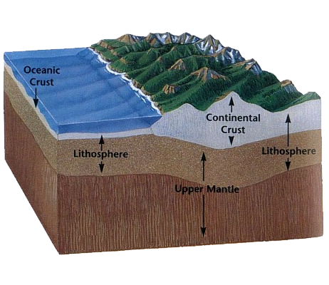

The continental crust is primarily composed of granite rocks. These types of rock contain more silicon (Si) and aluminum (Al).The continental crust is thicker than the oceanic but less dense.
The oceanic crust is primarily composed of basaltic rocks. This type of rock contains more silicate (O3Si-2) and magnesium (Mg), which are the most abundant minerals in the oceanic crust. The oceanic crust is thinner than the continental crust but denser.
